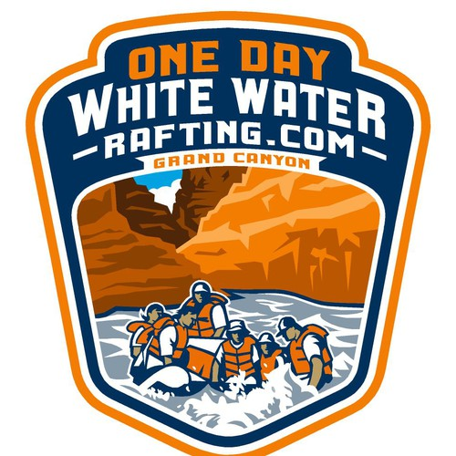

Overview
Purpose
We aim to create good experiences while still being safe on the river. Here at White Water Rafting we welcome applicants to apply to our wonderful programs to not only make it safe for the new routes, but to give the youth a chance to make waves. Our purpose is to have an accident free workplace, while having fun.
Audience
Our work helps the local communities, and the youth have a summer job. We promise to provide a safe work place, for inviduals looking to get out on the water.
Branding
Website Logo
Style Guide
Color Palette
Palette URL:
https://coolors.co/201e1f-ff4000-faaa8d-feefdd-50b2c0| Primary | Secondary | Accent 1 | Accent 2 |
|---|---|---|---|
| 201E1F | FF4000 | FEEFDD |
Typography
Heading Font: cubano, san-serif
Paragraph Font: cubano, san-serif
Normal paragraph example
The best Whitewater Rafting on the Grand Canyon, Wild River Rafting Company offers rafting on the Grand Canyon and Roaring Fork Rivers in Arizona Springs. Since 1969, we have been family owned and operated, rafting the Grand Canyon and beyond.
Colored paragraph example
This 88-mile section of the Colorado River is an excellent introduction to the Grand Canyon as the rapids progress from moderate to extra large and the cliffs and rock layers rise higher and higher. We see some of the most striking and vibrantly colored limestone cliffs as we pass Marble Canyon. Our Grand Canyon adventure includes visits to Native American ruins, the fern-fringed spring of Vasey’s Paradise, the cool recess of Redwall Cavern, ancient fossils and a swim in the turquoise blue Little Colorado. At the end of the week of floating, hiking and camping in the Grand Canyon’s majesty, this trip concludes with a dramatic long hike up to the South Rim.
Navigation
Site Map
Wireframes
Home

[Page 2]